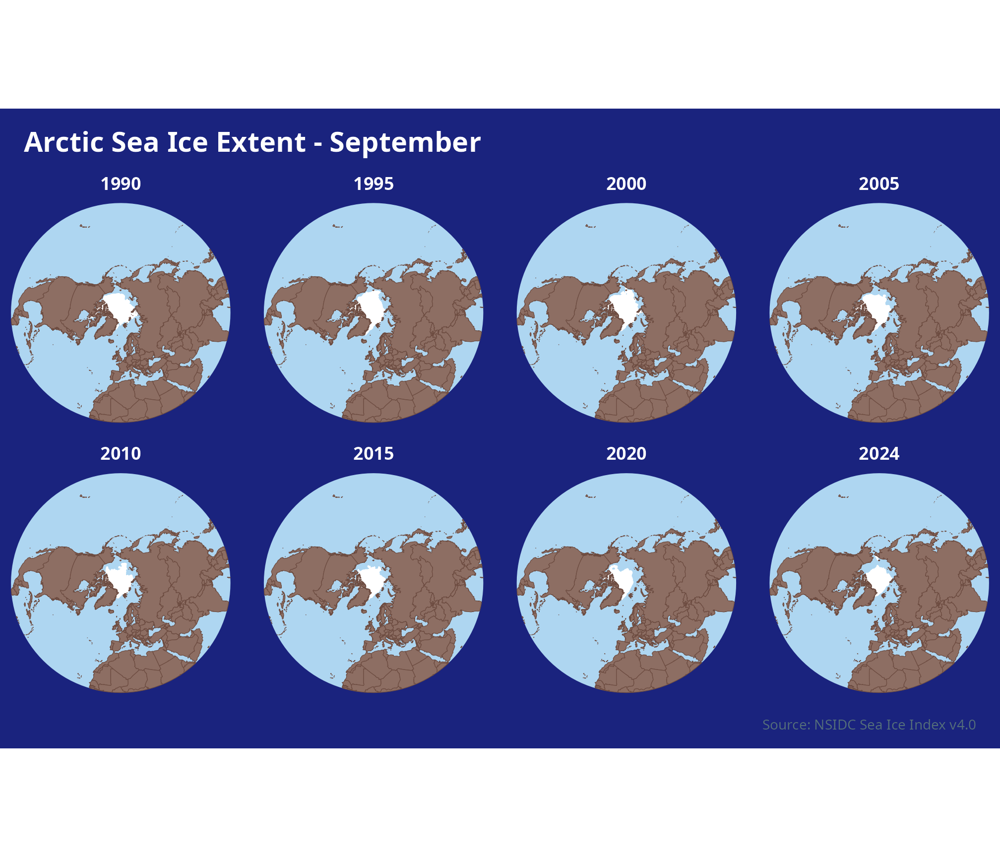
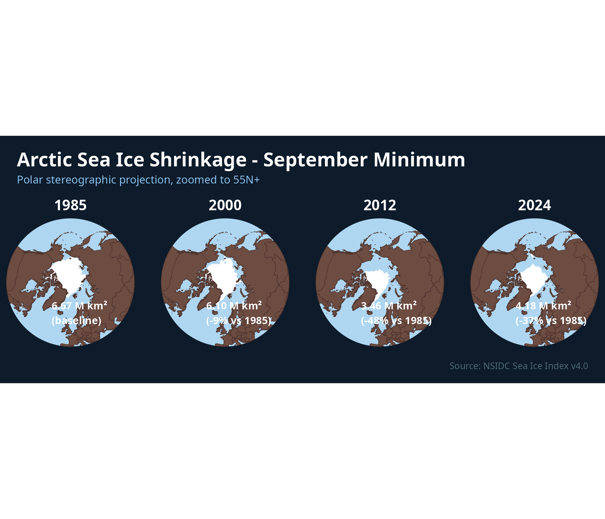

Code
# install any missing packages before running
# install.packages(c("plotly", "ggplot2", "sf", "rnaturalearth", "rnaturalearthdata"))
library(plotly)
library(ggplot2)
library(sf)
library(rnaturalearth)Visualising 45 years of decline with real NSIDC data
Every September the Arctic sea ice reaches its annual minimum after the summer melt season. The National Snow and Ice Data Center (NSIDC) has been tracking this since 1979 using satellite passive-microwave sensors. Their Sea Ice Index v4.0 is the authoritative public record.
This document shows you exactly how to download the real data and reproduce the charts below — no manual downloads, no hardcoded numbers.
NSIDC publishes one CSV per month. September (month 09) is the annual minimum.
year extent
1 1979 7.05
2 1980 7.67
3 1981 7.14
4 1982 7.30
5 1983 7.39
6 1984 6.81avg_baseline<-mean(arctic$extent[arctic$year<=1990])
loss_pct<-round((1-min(arctic$extent)/avg_baseline)*100)
col_fill<-"#B3E5FC"
col_line<-"#0277BD"
col_trend<-"#C62828"
col_record<-"#E65100"
col_ref<-"#78909C"
col_title<-"#0D1B40"
records<-arctic[arctic$year%in%c(2007,2012,2020),]
low<-arctic[which.min(arctic$extent),]
# the straight-line trend and its 95% confidence band
trend<-predict(lm(extent~year,data=arctic),interval="confidence")
plot_ly(arctic,x=~year) %>%
add_trace(y=~extent,type="scatter",mode="none",fill="tozeroy",fillcolor=toRGB(col_fill,0.55),
hoverinfo="skip") %>%
add_ribbons(ymin=trend[,"lwr"],ymax=trend[,"upr"],line=list(width=0),
fillcolor=toRGB("#FFCDD2",0.25),hoverinfo="skip") %>%
add_lines(y=trend[,"fit"],line=list(color=col_trend,width=3,dash="dash"),
hovertemplate="Trend, %{x}: %{y:.2f} million km²<extra></extra>") %>%
add_lines(y=~extent,line=list(color=col_line,width=2.5),
hovertemplate="%{x}: %{y:.2f} million km²<extra></extra>") %>%
add_markers(data=records,y=~extent,marker=list(color=col_record,size=12),
hovertemplate="%{x}: %{y:.2f} million km²<extra></extra>") %>%
layout(title=list(text=paste0("<b>Arctic Sea Ice Is Melting</b><br>",
"<span style='font-size:13px;color:#737373'>September ",
"minimum sea ice extent, 1979 to present</span>"),
x=0.02,xanchor="left",y=0.97,yanchor="top",font=list(size=20,color=col_title)),
showlegend=FALSE,plot_bgcolor="#F0F8FF",xaxis=list(title="",tick0=1980,dtick=5),
yaxis=list(title="Extent (million km²)",ticksuffix=" M",rangemode="tozero"),
shapes=list(list(type="line",xref="paper",x0=0,x1=1,y0=avg_baseline,y1=avg_baseline,
line=list(color=col_ref,dash="dot",width=1.5))),
annotations=list(list(x=1981,y=avg_baseline+0.18,text="1979-1990 mean",showarrow=FALSE,
xanchor="left",font=list(size=11,color=col_ref)),
list(x=low$year,y=low$extent,ax=0,ay=45,
text=paste0("<b>Record low<br>",round(low$extent,2)," M km² (",
low$year,")</b>"),
arrowcolor=col_record,arrowhead=0,
font=list(size=11,color=col_record)),
list(x=max(arctic$year),y=max(arctic$extent)*0.93,
text=paste0("<b>-",loss_pct,"% vs.<br>1979-1990 avg</b>"),
showarrow=FALSE,xanchor="right",font=list(size=16,color=col_trend)),
list(text="Source: NSIDC Sea Ice Index v4.0 | noaadata.apps.nsidc.org",
xref="paper",yref="paper",x=1,y=-0.08,xanchor="right",yanchor="top",
showarrow=FALSE,font=list(size=10,color="#999999"))),
margin=list(t=80,b=60)) %>%
config(displaylogo=FALSE)NSIDC also publishes the sea ice boundary as a polygon shapefile for every month. We download and cache them locally, then read with sf.
month_dirs<-c("01_Jan","02_Feb","03_Mar","04_Apr","05_May","06_Jun","07_Jul","08_Aug","09_Sep",
"10_Oct","11_Nov","12_Dec")
fetch_ice_extent<-function(year,month="09",pole="N",tmpdir=file.path(tempdir(),"nsidc_ice")) {
dir.create(tmpdir,showWarnings=FALSE)
mm<-sprintf("%02d",as.integer(month))
yymm<-paste0(year,mm)
pole_dir<-ifelse(pole=="N","north","south")
mon_dir<-month_dirs[as.integer(mm)]
url<-paste0("https://noaadata.apps.nsidc.org/NOAA/G02135/",pole_dir,
"/monthly/shapefiles/shp_extent/",mon_dir,"/","extent_",pole,"_",yymm,
"_polygon_v4.0.zip")
zip_path<-file.path(tmpdir,paste0("ice_",pole,"_",yymm,".zip"))
if(!file.exists(zip_path)||file.size(zip_path)<1000) {
message("Downloading ",year,"-",mm," ...")
tryCatch(download.file(url,zip_path,quiet=TRUE,mode="wb"),error=function(e) {
message(" failed: ",e$message)
return(NULL)
})
}
if(!file.exists(zip_path)||file.size(zip_path)<1000)
return(NULL)
exdir<-file.path(tmpdir,paste0("ice_",pole,"_",yymm))
suppressWarnings(unzip(zip_path,exdir=exdir,overwrite=FALSE))
shp<-list.files(exdir,"\\.shp$",full.names=TRUE)[1]
if(is.na(shp))
return(NULL)
shape<-tryCatch(sf::st_read(shp,quiet=TRUE),error=function(e) NULL)
if(is.null(shape))
return(NULL)
shape$year<-year
return(shape)
}world<-ne_countries(scale="medium",returnclass="sf")
crs_polar<-"+proj=stere +lat_0=90 +lat_ts=70 +lon_0=0 +datum=WGS84 +units=m"
ice_proj<-st_transform(ice_all,crs_polar)
world_proj<-st_transform(world,crs_polar)
clip_large<-st_buffer(st_transform(st_sfc(st_point(c(0,90)),crs=4326),crs_polar),dist=1e7)
world_clip<-st_intersection(world_proj,clip_large)
ggplot()+
geom_sf(data=clip_large,fill="#AED6F1",color=NA)+
geom_sf(data=ice_proj,fill="white",color="white",linewidth=0.1)+
geom_sf(data=world_clip,fill="#8D6E63",color="#6D4C41",linewidth=0.15)+
facet_wrap(~year,ncol=4)+
labs(title="Arctic Sea Ice Extent - September",caption="Source: NSIDC Sea Ice Index v4.0")+
theme_void(base_size=10)+
theme(plot.background=element_rect(fill="#1A237E",color=NA),
strip.text=element_text(color="white",face="bold",size=9),
plot.title=element_text(color="white",face="bold",size=14,margin=margin(12,0,8,12)),
plot.caption=element_text(color="#546E7A",size=7,hjust=1,margin=margin(8,12,8,0)),
panel.spacing=unit(0.4,"lines"))
Four key years in a closer view, with the actual extent area computed from the polygon geometry.
ice_zoom_proj<-st_transform(ice_zoom_all,crs_polar)
clip_tight<-st_buffer(st_transform(st_sfc(st_point(c(0,90)),crs=4326),crs_polar),dist=5.5e6)
world_clip_tight<-st_intersection(world_proj,clip_tight)
ice_zoom_clip<-st_intersection(ice_zoom_proj,clip_tight)
# the area of each year (million km²), from the geometry
ice_areas<-sapply(years_zoom,function(y) {
sub<-ice_zoom_proj[ice_zoom_proj$year==y,]
if(nrow(sub)==0)
return(NA)
as.numeric(sum(st_area(sub)))/1e12
})
base_area<-ice_areas[1]
labels_df<-data.frame(year=years_zoom,
label=ifelse(seq_along(years_zoom)==1,
sprintf("%.2f M km²\n(baseline)",ice_areas),
sprintf("%.2f M km²\n(-%.0f%% vs %d)",ice_areas,
(1-ice_areas/base_area)*100,years_zoom[1])))
ice_zoom_clip<-merge(ice_zoom_clip,labels_df,by="year")
ggplot()+
geom_sf(data=clip_tight,fill="#AED6F1",color=NA)+
geom_sf(data=ice_zoom_clip,fill="white",color="#c8e0f0",linewidth=0.15)+
geom_sf(data=world_clip_tight,fill="#6D4C41",color="#4E342E",linewidth=0.2)+
geom_sf_text(data=ice_zoom_clip[!duplicated(ice_zoom_clip$year),],
aes(label=label,geometry=geometry),stat="sf_coordinates",color="white",size=3,
fontface="bold",nudge_x=-3.2e6,nudge_y=-4.0e6,hjust=0)+
facet_wrap(~year,ncol=4)+
labs(title="Arctic Sea Ice Shrinkage - September Minimum",
subtitle="Polar stereographic projection, zoomed to 55N+",
caption="Source: NSIDC Sea Ice Index v4.0")+
theme_void(base_size=11)+
theme(plot.background=element_rect(fill="#0D1B2A",color=NA),
strip.text=element_text(color="white",face="bold",size=12),
plot.title=element_text(color="white",face="bold",size=16,margin=margin(14,0,4,14)),
plot.subtitle=element_text(color="#90CAF9",size=9,margin=margin(0,0,10,14)),
plot.caption=element_text(color="#546E7A",size=7.5,hjust=1,margin=margin(8,14,10,0)),
panel.spacing=unit(0.8,"lines"))
All data in this document comes directly from NSIDC Sea Ice Index v4.0:
https://noaadata.apps.nsidc.org/NOAA/G02135/north/monthly/data/https://noaadata.apps.nsidc.org/NOAA/G02135/north/monthly/shapefiles/shp_extent/Fetterer, F., K. Knowles, W. N. Meier, M. Savoie, and A. K. Windnagel. 2017, updated daily. Sea Ice Index, Version 3. Boulder, Colorado USA. NSIDC: National Snow and Ice Data Center. https://doi.org/10.7265/N5K072F8.
---
title: "Arctic Sea Ice Is Melting"
description: "Arctic sea ice decline from the NSIDC Sea Ice Index in R: the September minimum since 1979 as a time series and maps of the ice edge drawn with sf and ggplot2."
subtitle: "Visualising 45 years of decline with real NSIDC data"
author: ""
---
```{r setup, include=FALSE}
directory<-""
if(rstudioapi::isAvailable())
directory<-paste0(dirname(rstudioapi::getActiveDocumentContext()$path),"/")
source(paste0(directory,"R/code_options.R"))
```
## Background
Every September the Arctic sea ice reaches its annual minimum after the summer melt season. The **National Snow and Ice Data Center (NSIDC)** has been tracking this since 1979 using satellite passive-microwave sensors. Their **Sea Ice Index v4.0** is the authoritative public record.
This document shows you exactly how to download the real data and reproduce the charts below — no manual downloads, no hardcoded numbers.
---
## Packages
```{r packages}
# install any missing packages before running
# install.packages(c("plotly", "ggplot2", "sf", "rnaturalearth", "rnaturalearthdata"))
library(plotly)
library(ggplot2)
library(sf)
library(rnaturalearth)
```
---
## Part 1 — Time series
### Download the data
NSIDC publishes one CSV per month. September (month 09) is the annual minimum.
```{r download-csv}
csv_url<-"https://noaadata.apps.nsidc.org/NOAA/G02135/north/monthly/data/N_09_extent_v4.0.csv"
arctic<-read.csv(csv_url,strip.white=TRUE)
arctic<-arctic[arctic$year>=1979,c("year","extent")]
rownames(arctic)<-NULL
head(arctic)
```
### Plot
```{r timeseries}
avg_baseline<-mean(arctic$extent[arctic$year<=1990])
loss_pct<-round((1-min(arctic$extent)/avg_baseline)*100)
col_fill<-"#B3E5FC"
col_line<-"#0277BD"
col_trend<-"#C62828"
col_record<-"#E65100"
col_ref<-"#78909C"
col_title<-"#0D1B40"
records<-arctic[arctic$year%in%c(2007,2012,2020),]
low<-arctic[which.min(arctic$extent),]
# the straight-line trend and its 95% confidence band
trend<-predict(lm(extent~year,data=arctic),interval="confidence")
plot_ly(arctic,x=~year) %>%
add_trace(y=~extent,type="scatter",mode="none",fill="tozeroy",fillcolor=toRGB(col_fill,0.55),
hoverinfo="skip") %>%
add_ribbons(ymin=trend[,"lwr"],ymax=trend[,"upr"],line=list(width=0),
fillcolor=toRGB("#FFCDD2",0.25),hoverinfo="skip") %>%
add_lines(y=trend[,"fit"],line=list(color=col_trend,width=3,dash="dash"),
hovertemplate="Trend, %{x}: %{y:.2f} million km²<extra></extra>") %>%
add_lines(y=~extent,line=list(color=col_line,width=2.5),
hovertemplate="%{x}: %{y:.2f} million km²<extra></extra>") %>%
add_markers(data=records,y=~extent,marker=list(color=col_record,size=12),
hovertemplate="%{x}: %{y:.2f} million km²<extra></extra>") %>%
layout(title=list(text=paste0("<b>Arctic Sea Ice Is Melting</b><br>",
"<span style='font-size:13px;color:#737373'>September ",
"minimum sea ice extent, 1979 to present</span>"),
x=0.02,xanchor="left",y=0.97,yanchor="top",font=list(size=20,color=col_title)),
showlegend=FALSE,plot_bgcolor="#F0F8FF",xaxis=list(title="",tick0=1980,dtick=5),
yaxis=list(title="Extent (million km²)",ticksuffix=" M",rangemode="tozero"),
shapes=list(list(type="line",xref="paper",x0=0,x1=1,y0=avg_baseline,y1=avg_baseline,
line=list(color=col_ref,dash="dot",width=1.5))),
annotations=list(list(x=1981,y=avg_baseline+0.18,text="1979-1990 mean",showarrow=FALSE,
xanchor="left",font=list(size=11,color=col_ref)),
list(x=low$year,y=low$extent,ax=0,ay=45,
text=paste0("<b>Record low<br>",round(low$extent,2)," M km² (",
low$year,")</b>"),
arrowcolor=col_record,arrowhead=0,
font=list(size=11,color=col_record)),
list(x=max(arctic$year),y=max(arctic$extent)*0.93,
text=paste0("<b>-",loss_pct,"% vs.<br>1979-1990 avg</b>"),
showarrow=FALSE,xanchor="right",font=list(size=16,color=col_trend)),
list(text="Source: NSIDC Sea Ice Index v4.0 | noaadata.apps.nsidc.org",
xref="paper",yref="paper",x=1,y=-0.08,xanchor="right",yanchor="top",
showarrow=FALSE,font=list(size=10,color="#999999"))),
margin=list(t=80,b=60)) %>%
config(displaylogo=FALSE)
```
---
## Part 2 — Maps (overview)
### How the shapefiles work
NSIDC also publishes the sea ice boundary as a polygon shapefile for every month. We download and cache them locally, then read with `sf`.
```{r shapefile-function}
month_dirs<-c("01_Jan","02_Feb","03_Mar","04_Apr","05_May","06_Jun","07_Jul","08_Aug","09_Sep",
"10_Oct","11_Nov","12_Dec")
fetch_ice_extent<-function(year,month="09",pole="N",tmpdir=file.path(tempdir(),"nsidc_ice")) {
dir.create(tmpdir,showWarnings=FALSE)
mm<-sprintf("%02d",as.integer(month))
yymm<-paste0(year,mm)
pole_dir<-ifelse(pole=="N","north","south")
mon_dir<-month_dirs[as.integer(mm)]
url<-paste0("https://noaadata.apps.nsidc.org/NOAA/G02135/",pole_dir,
"/monthly/shapefiles/shp_extent/",mon_dir,"/","extent_",pole,"_",yymm,
"_polygon_v4.0.zip")
zip_path<-file.path(tmpdir,paste0("ice_",pole,"_",yymm,".zip"))
if(!file.exists(zip_path)||file.size(zip_path)<1000) {
message("Downloading ",year,"-",mm," ...")
tryCatch(download.file(url,zip_path,quiet=TRUE,mode="wb"),error=function(e) {
message(" failed: ",e$message)
return(NULL)
})
}
if(!file.exists(zip_path)||file.size(zip_path)<1000)
return(NULL)
exdir<-file.path(tmpdir,paste0("ice_",pole,"_",yymm))
suppressWarnings(unzip(zip_path,exdir=exdir,overwrite=FALSE))
shp<-list.files(exdir,"\\.shp$",full.names=TRUE)[1]
if(is.na(shp))
return(NULL)
shape<-tryCatch(sf::st_read(shp,quiet=TRUE),error=function(e) NULL)
if(is.null(shape))
return(NULL)
shape$year<-year
return(shape)
}
```
### Download shapefiles (every 5 years)
```{r download-shp-overview}
years_overview<-c(1990,1995,2000,2005,2010,2015,2020,2024)
ice_list<-lapply(years_overview,fetch_ice_extent,month="09",pole="N")
ice_list<-Filter(Negate(is.null),ice_list)
ice_all<-do.call(rbind,ice_list)
```
### Build the map
```{r map-overview}
world<-ne_countries(scale="medium",returnclass="sf")
crs_polar<-"+proj=stere +lat_0=90 +lat_ts=70 +lon_0=0 +datum=WGS84 +units=m"
ice_proj<-st_transform(ice_all,crs_polar)
world_proj<-st_transform(world,crs_polar)
clip_large<-st_buffer(st_transform(st_sfc(st_point(c(0,90)),crs=4326),crs_polar),dist=1e7)
world_clip<-st_intersection(world_proj,clip_large)
ggplot()+
geom_sf(data=clip_large,fill="#AED6F1",color=NA)+
geom_sf(data=ice_proj,fill="white",color="white",linewidth=0.1)+
geom_sf(data=world_clip,fill="#8D6E63",color="#6D4C41",linewidth=0.15)+
facet_wrap(~year,ncol=4)+
labs(title="Arctic Sea Ice Extent - September",caption="Source: NSIDC Sea Ice Index v4.0")+
theme_void(base_size=10)+
theme(plot.background=element_rect(fill="#1A237E",color=NA),
strip.text=element_text(color="white",face="bold",size=9),
plot.title=element_text(color="white",face="bold",size=14,margin=margin(12,0,8,12)),
plot.caption=element_text(color="#546E7A",size=7,hjust=1,margin=margin(8,12,8,0)),
panel.spacing=unit(0.4,"lines"))
```
---
## Part 3 — Maps (zoomed comparison)
Four key years in a closer view, with the actual extent area computed from the polygon geometry.
```{r download-shp-zoom}
years_zoom<-c(1985,2000,2012,2024)
ice_zoom_list<-lapply(years_zoom,fetch_ice_extent,month="09",pole="N")
ice_zoom_list<-Filter(Negate(is.null),ice_zoom_list)
ice_zoom_all<-do.call(rbind,ice_zoom_list)
```
```{r map-zoom}
ice_zoom_proj<-st_transform(ice_zoom_all,crs_polar)
clip_tight<-st_buffer(st_transform(st_sfc(st_point(c(0,90)),crs=4326),crs_polar),dist=5.5e6)
world_clip_tight<-st_intersection(world_proj,clip_tight)
ice_zoom_clip<-st_intersection(ice_zoom_proj,clip_tight)
# the area of each year (million km²), from the geometry
ice_areas<-sapply(years_zoom,function(y) {
sub<-ice_zoom_proj[ice_zoom_proj$year==y,]
if(nrow(sub)==0)
return(NA)
as.numeric(sum(st_area(sub)))/1e12
})
base_area<-ice_areas[1]
labels_df<-data.frame(year=years_zoom,
label=ifelse(seq_along(years_zoom)==1,
sprintf("%.2f M km²\n(baseline)",ice_areas),
sprintf("%.2f M km²\n(-%.0f%% vs %d)",ice_areas,
(1-ice_areas/base_area)*100,years_zoom[1])))
ice_zoom_clip<-merge(ice_zoom_clip,labels_df,by="year")
ggplot()+
geom_sf(data=clip_tight,fill="#AED6F1",color=NA)+
geom_sf(data=ice_zoom_clip,fill="white",color="#c8e0f0",linewidth=0.15)+
geom_sf(data=world_clip_tight,fill="#6D4C41",color="#4E342E",linewidth=0.2)+
geom_sf_text(data=ice_zoom_clip[!duplicated(ice_zoom_clip$year),],
aes(label=label,geometry=geometry),stat="sf_coordinates",color="white",size=3,
fontface="bold",nudge_x=-3.2e6,nudge_y=-4.0e6,hjust=0)+
facet_wrap(~year,ncol=4)+
labs(title="Arctic Sea Ice Shrinkage - September Minimum",
subtitle="Polar stereographic projection, zoomed to 55N+",
caption="Source: NSIDC Sea Ice Index v4.0")+
theme_void(base_size=11)+
theme(plot.background=element_rect(fill="#0D1B2A",color=NA),
strip.text=element_text(color="white",face="bold",size=12),
plot.title=element_text(color="white",face="bold",size=16,margin=margin(14,0,4,14)),
plot.subtitle=element_text(color="#90CAF9",size=9,margin=margin(0,0,10,14)),
plot.caption=element_text(color="#546E7A",size=7.5,hjust=1,margin=margin(8,14,10,0)),
panel.spacing=unit(0.8,"lines"))
```
---
## Data source
All data in this document comes directly from **NSIDC Sea Ice Index v4.0**:
- **Monthly extent CSV**: `https://noaadata.apps.nsidc.org/NOAA/G02135/north/monthly/data/`
- **Monthly shapefiles**: `https://noaadata.apps.nsidc.org/NOAA/G02135/north/monthly/shapefiles/shp_extent/`
> Fetterer, F., K. Knowles, W. N. Meier, M. Savoie, and A. K. Windnagel. 2017, updated daily. *Sea Ice Index, Version 3*. Boulder, Colorado USA. NSIDC: National Snow and Ice Data Center. https://doi.org/10.7265/N5K072F8.